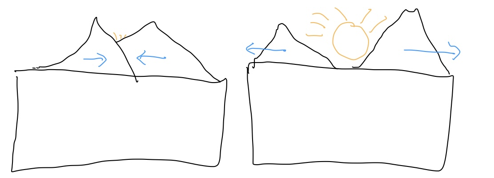
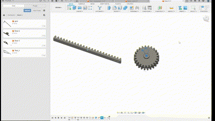
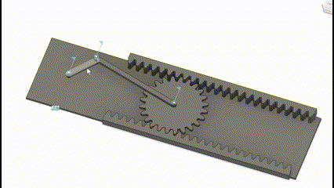
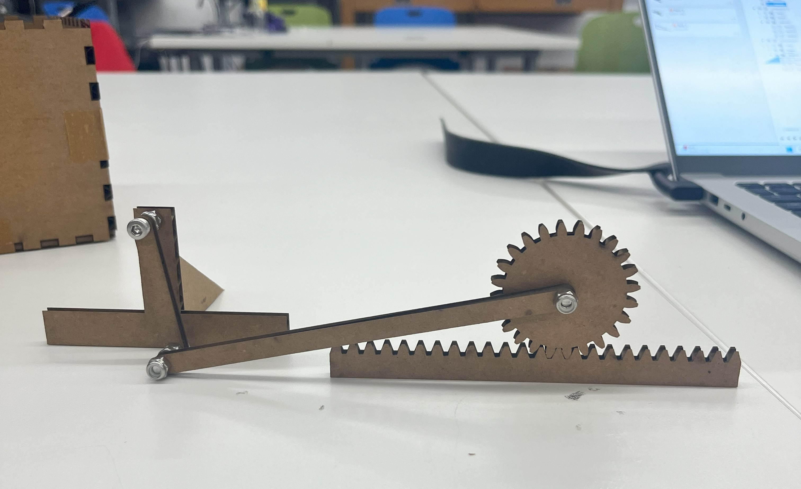
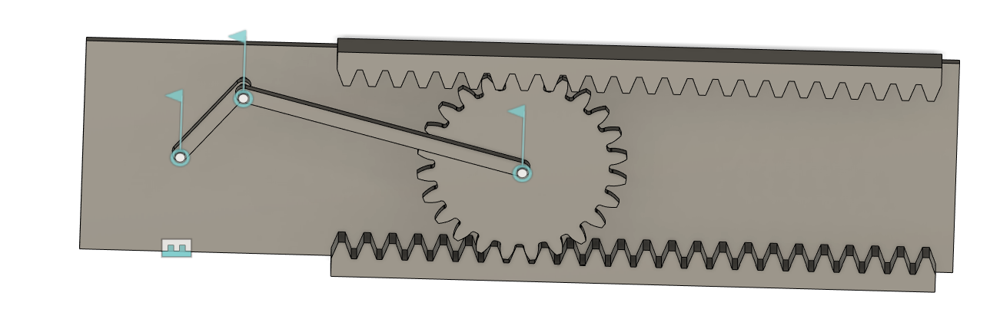
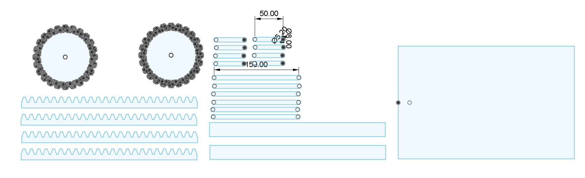

Welcome to my PS70 portfolio! I hope you enjoy learning more about my project for PS70: Intro to Digital Fabrication.
03: Hand Tools and Fabrication
This week, I experimented a lot with assemblies in Fusion. What I thought would be a pretty easy part of the project turned out to take a long time, and so I sort of fell into a rabbit hole. Click one of the links below to see a recap of this week's assignment:
More Fusion Broccoli
My initial hope was to design a box with two mountains in the foreground which would horizontally slide out of the way to reveal a scene in the back, like a sunrise:

This would require translating rotational motion to cyclic horizontal movement, so I decided to use the rack-and-pinion mechanism from one of the course pages as the base for my design. However, I had no idea how to model this, so I spent a while working through Fusion tutorials on rendering motion. Here are some results below:


These mostly went off without a hitch, so I decided to start trying to model the rack and pinion itself. Little did I know, this would not be so simple.
DEADLY FUSION BROCCOLI ALLERGY ACQUIRED
As I tried to model a simple rack and pinion, I began to run into considerable issues. While it was relatively simple to model the relationship between the joints themselves, and to make the gear spin relative to a joint angle, it was incredibly difficult to get the gear to spin with the revolving joint along a horizontal rack. I attempted to make this work using motion links, motion studies, and by manually moving relative joints. Eventually, I tried to enable collision detection to emperically handle the movement, but this caused so much lag that Fusion was basically unusable.
''

Eventually, I just gave up trying to model the kinematics, deciding instead to take a faster approach and just get some parts printed.
Rack-and-Pinion Mechanism
By this point, my goal was just to get something that moved. I grabbed a gear and rack design from a Fusion library, printed it out with some cardboard rods, and then tried to haphazardly assemble something usable:

The result was rough, and had some obvious defects that made it not movable (like the small rod being longer than its base, causing it to hit the table at each revolution), but it finally gave me a sense of what the problems were and where I needed to proceed. I realized that I'd have to be more cognizant of the depth of each component, because the first model didn't account for, among other things, the size of screwheads.
I got a slightly better idea of what I was looking for, and so I built a truer-to-life mockup:

Still, I was afraid that some unanticipated mistake would cause the thickness to be off, and I was running out of time to complete the project, so I decided to just take the components I thought I'd need and print a few copies of them at the laser cutter:

This rough approach sort of worked, and finally I was able to get a gear that (mostly) moved. I didn't have time to figure out how to secure a second moving pinon to the top, but I got a video of the machine in action:
It's definitely not perfect, but it was exciting to get a few parts out there. That said, there remain some persistent problems. Most significantly, I couldn't find a secure way to attach the first joint to the motor, so it had a tendency to fall off randomly:
In any case, that's assignment 3 wrapped up. Definitely a more difficult one for me, but I'm excited to try for something a little more attainable in future weeks.
—Thomas